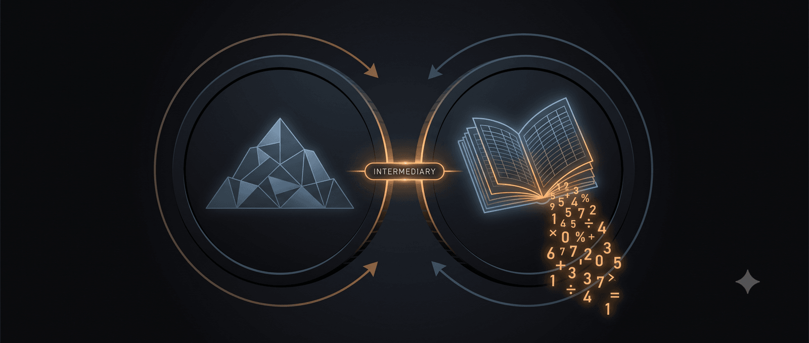

Ngân hàng làm trung gian vốn như thế nào?
Hằng ngày, chúng ta thấy ngân hàng huy động tiền gửi. Người cần tiền thì đến ngân hàng vay. Nhìn như vậy, ngân hàng huy động tiền vào để cho vay ra; lý thuyết kinh tế học gọi đó là chức năng trung gian giữa người thừa vốn và người thiếu vốn.
Nhưng chúng ta cũng thấy một khía cạnh khác. Khi ngân hàng cho khách hàng vay, chẳng hạn 10 tỷ đồng, ngân hàng ghi nhận một tài sản mới — khoản khách hàng nợ mình 10 tỷ — ở bên tài sản của bảng cân đối kế toán; đồng thời ghi có 10 tỷ vào tài khoản người thụ hưởng (có thể là chính người vay, cũng có thể là người bán mà người vay chỉ định) ở bên nguồn vốn. Như vậy, khoản tiền gửi 10 tỷ được tạo ra ngay khi ngân hàng cho vay, chứ không phải huy động rồi mới cho vay. Lý thuyết gọi đây là khả năng tạo tiền của ngân hàng thương mại: cho vay tạo tiền, chứ không phải có tiền mới cho vay.
Hai hiện tượng này đặt cạnh nhau gợi lên những thắc mắc. Nếu ngân hàng tạo ra tiền gửi ngay khi cho vay, vậy huy động vốn để làm gì? Còn nếu việc huy động vẫn cần thiết, phải chăng rốt cuộc ngân hàng vẫn cho vay bằng tiền người khác gửi vào? Và sâu xa hơn, ngân hàng làm trung gian giữa người thừa vốn và người thiếu vốn theo nghĩa nào?
Bài viết này làm rõ các thắc mắc đó bằng cách phân tích các khía cạnh kinh tế thực (sản lượng và nguồn lực thật của nền kinh tế), kinh tế tài chính (tiền gửi do tín dụng tạo ra), và thanh khoản của từng ngân hàng. Khi tách đúng các khía cạnh này, ta sẽ thấy ngân hàng vừa tạo tiền, vừa làm trung gian, nhưng không theo nghĩa đơn giản là ‘huy động tiền gửi để có tiền rồi đem cho vay’.
1. Khía cạnh kinh tế thực
Trước khi nói về tiền, hãy bắt đầu với kinh tế thực. Hình dung nền kinh tế thu nhỏ như một ngôi làng. Nơi đây làm ra 100 bao lúa trong một năm. Lượng hàng hóa làm ra này, trong kinh tế học, gọi là sản lượng thực (real output) — thước đo tổng hợp của nó cho cả nền kinh tế là tổng sản phẩm trong nước thực (GDP thực). Dân làng ăn hết 60 bao — đây là tiêu dùng (consumption). Còn lại 40 bao, là tiết kiệm thực (real saving) - phần sản lượng đã làm ra nhưng chưa tiêu dùng (sản lượng trừ tiêu dùng, hay Y − C). Cần nhớ, tiết kiệm chỉ xuất hiện khi xã hội sản xuất nhiều hơn mức tiêu dùng hiện tại. Phần tiết kiệm thực này chính là nguồn lực thực (real resources) dành cho đầu tư (investment) — mở rộng sản xuất năm sau.
Vấn đề là người đang giữ 40 bao lúa dư chưa chắc là người có nhu cầu đầu tư. Người có ý tưởng mở rộng sản xuất lại có thể cần lúa giống, nhưng lại không nắm trong tay các nguồn lực tiết kiệm (40 bao lúa) đó.
Nói cách khác, tiết kiệm thực có thể nằm ở một nhóm người, còn nhu cầu đầu tư thật lại nằm ở nhóm khác. Nền kinh tế vì thế cần một cơ chế để sức mua chuyển đến người có nhu cầu, giúp họ mua và sử dụng các nguồn lực thực đang nhàn rỗi. Đây là chỗ ngân hàng và tiền xuất hiện.
3. Khía cạnh kinh tế tài chính
Ở phần đầu ta đã thấy: cho vay tạo ra tiền gửi mới — một phương tiện thanh toán — chứ ngân hàng không cần có sẵn tiền gửi rồi mới cho vay. Có người gọi khoản tiền gửi sinh ra theo cách này là ‘tiền bút toán’ (fountain pen money); hiện tượng cho vay tạo tiền gửi này chính là điều lý thuyết kinh tế hiện đại gọi là tiền nội sinh (endogenous money). Nhưng câu hỏi quan trọng tiếp theo là: khoản tiền gửi mới đó dùng để làm gì, và nó liên quan thế nào tới của cải thật nói ở trên?
Khoản tiền gửi mới không làm nền kinh tế giàu lên ngay lập tức. Nó chỉ trao cho người vay sức mua (purchasing power). Người vay dùng sức mua này để mua lúa (và có thể thêm máy móc, lao động hoặc hàng hóa khác) từ những người đang nắm giữ nguồn lực thực nhưng chưa cần sử dụng. Như vậy vốn bằng tiền không tự sinh ra của cải, mà là quyền sử dụng nguồn lực thực được chuyển từ người đang nắm giữ sang người có dự án đầu tư mới tạo ra của cải.
Vì vậy, hai mệnh đề ‘ngân hàng tạo tiền’ và ‘ngân hàng làm trung gian’ không mâu thuẫn. Ngân hàng tạo tiền gửi ở khía cạnh kinh tế tài chính; nhờ đó, nó điều phối sức mua đối với nguồn lực thực ở khía cạnh kinh tế thực - ngân hàng vừa tạo ra sức mua, vừa giúp nhà kinh doanh tiếp cận nguồn lực cần thiết để đổi mới và đầu tư.
3. Giới hạn của việc tạo tiền
Đến đây có thể nảy sinh một câu hỏi: nếu ngân hàng tạo tiền gửi dễ như vậy, tại sao không tạo thật nhiều để cả nước giàu lên? Câu trả lời: tiền chỉ tạo thêm sức mua danh nghĩa; nó không tự tạo thêm sản lượng thực.
Quay lại ngôi làng. Nếu vẫn chỉ có 40 bao lúa dư nhưng ngân hàng tạo ra lượng sức mua lớn hơn rất nhiều so với số lúa sẵn có, nhiều người sẽ cùng cầm tiền đi tranh mua cùng một lượng lúa. Khi lượng tiền và tín dụng tăng nhanh hơn năng lực cung ứng hàng hóa và dịch vụ thực, áp lực giá sẽ xuất hiện. Đây là một cơ chế quan trọng tạo ra lạm phát (inflation).
Giới hạn cuối cùng của việc tạo tiền vì thế không nằm ở thao tác ghi sổ, mà nằm ở năng lực sản xuất (productive capacity) — tức mức sản lượng tiềm năng (potential output) mà nền kinh tế có thể đạt bền vững — cùng mức độ nhàn rỗi của nguồn lực và chất lượng dự án được tài trợ. Tín dụng tốt có thể giúp chuyển nguồn lực sang nơi tạo thêm sản lượng trong tương lai. Tín dụng kém, hoặc tín dụng tăng quá nhanh so với năng lực thật, có thể chỉ đẩy giá hàng hóa, giá tài sản và rủi ro tài chính lên cao. Đây cũng là lý do ngân hàng trung ương phải điều hành lãi suất, thanh khoản và kỳ vọng lạm phát.
4. Hai loại ‘tiết kiệm’ thường bị nhầm làm một
Bây giờ quay lại câu nói quen thuộc ‘ngân hàng lấy tiền gửi để cho vay’. Câu này đúng một phần trong cảm nhận đời thường, nhưng dễ gây nhầm nếu không phân biệt hai loại tiết kiệm.
Tiết kiệm tài chính (financial saving) là số dư tiền trong tài khoản hoặc sổ tiết kiệm của bạn — một dạng của cải tài chính (financial wealth): tài sản tài chính của người gửi, đồng thời là nghĩa vụ nợ của ngân hàng. Khi bạn chuyển tiền từ tài khoản thanh toán sang sổ tiết kiệm, bạn chủ yếu chuyển một khoản tiền gửi đã tồn tại từ dạng thanh khoản cao sang dạng có kỳ hạn; bản thân thao tác đó không tạo thêm sản lượng thực cho nền kinh tế.
Tiết kiệm thực (real saving) là phần sản lượng xã hội làm ra nhưng chưa tiêu dùng (Y − C): trong ví dụ trên là 40 bao lúa. Đây mới là nguồn lực thực có thể dùng cho đầu tư. Nó chỉ phát sinh khi xã hội tiêu dùng ít hơn sản lượng hiện tại.
Vấn đề ở chỗ: khi nói ngân hàng làm trung gian giữa người thừa và người thiếu, ta không nên hiểu máy móc rằng ngân hàng chỉ chuyển tiền có sẵn từ người gửi sang người vay. Chính xác hơn, ngân hàng tạo sức mua bằng tiền gửi, rồi thông qua chi tiêu của người vay, sức mua đó điều phối quyền sử dụng nguồn lực thực trong nền kinh tế. Cũng vì thế, cần phân biệt tiết kiệm (theo nghĩa sản lượng thực chưa tiêu dùng) với khả năng tài trợ (financing) — sức mua bằng tiền tệ. Hệ thống ngân hàng có thể tạo ra rất nhiều khả năng tài trợ, vượt xa lượng tiết kiệm thực.
5. Ngân hàng huy động tiền gửi để làm gì?
Nếu xét toàn bộ hệ thống ngân hàng, cho vay có thể tạo ra tiền gửi. Nhưng nếu xét từng ngân hàng riêng lẻ, câu chuyện khác đi rất nhiều.
Giả sử ngân hàng A cho vay 10 tỷ đồng và ghi có 10 tỷ đồng vào tài khoản người thụ hưởng. Khi đó, một khoản tiền gửi mới được tạo ra. Nhưng nếu người thụ hưởng dùng số tiền này để trả cho người bán có tài khoản tại ngân hàng B, thì khoản tiền gửi sẽ chuyển từ ngân hàng A sang ngân hàng B. Ngân hàng A lúc này phải thanh toán cho ngân hàng B qua hệ thống thanh toán liên ngân hàng, thường bằng dự trữ mà A giữ tại ngân hàng trung ương.
Nói cách khác, từng ngân hàng có thể tạo tiền gửi khi cho vay, nhưng không chắc giữ được khoản tiền gửi đó: nếu tiền chảy sang ngân hàng khác, A phải có thanh khoản để thanh toán. Vì vậy, từng ngân hàng phải huy động và giữ tiền gửi không phải vì cần ‘gom đủ tiền trước rồi mới được cho vay’, mà vì cần quản lý thanh khoản (liquidity), chi phí vốn, cấu trúc nguồn vốn và các tỷ lệ an toàn. Tiền gửi thanh toán cho ngân hàng nguồn vốn rẻ và tương đối ổn định nếu khách hàng gắn bó với hệ sinh thái dịch vụ. Tiền gửi có kỳ hạn giúp kéo dài kỳ hạn nguồn vốn, dù phải trả lãi cao hơn. Ở cấp độ toàn hệ thống, phần lớn tiền gửi ngân hàng là kết quả nội sinh của quá trình mở rộng tín dụng — khoản vay mới thường đi kèm khoản tiền gửi mới — chứ không phải từ tiền mặt gửi vào trước đó.
Đây cũng là một cái phanh kinh tế quan trọng. Nếu ngân hàng cho vay quá nhanh nhưng không giữ được tiền gửi, dự trữ và thanh khoản sẽ căng. Nếu phải nâng lãi suất huy động quá cao, biên lợi nhuận bị thu hẹp. Nếu khoản vay rủi ro, yêu cầu vốn và tổn thất tín dụng sẽ tăng. Do đó, ngân hàng có thể tạo tiền gửi khi cho vay, nhưng không thể tạo tiền vô hạn và không tốn chi phí.
Từ đây có thể thấy ngân hàng không phải trung gian theo nghĩa hẹp ‘gom tiền gửi có sẵn rồi đem cho vay’, nhưng vẫn là trung gian theo những nghĩa rất quan trọng. Nó là trung gian kỳ hạn và thanh khoản: người gửi muốn an toàn và rút tiền bất cứ lúc nào, trong khi người vay cần vốn dài hạn; ngân hàng đứng giữa và gánh rủi ro thanh khoản. Nó cũng là trung gian thông tin: ngân hàng thẩm định, sàng lọc và giám sát người vay thay cho người gửi tiền và xã hội.
6. Tín dụng không thay được kinh tế thực và cơ hội đầu tư
Phân tích trên cũng giúp nhìn lại một phản xạ chính sách quen thuộc: khi muốn đẩy nhanh tăng trưởng GDP, ta thường nghĩ ngay tới việc nới tín dụng. Nhưng nếu tín dụng chỉ tạo thêm sức mua danh nghĩa, còn của cải thật đến từ sản lượng, thì mở rộng tín dụng không tự nó nâng được năng lực sản xuất. Cái quyết định tăng trưởng bền vững không phải lượng tín dụng bơm ra, mà là kinh tế thực có đủ cơ hội đầu tư (investment opportunities) tốt để hấp thụ nguồn vốn đó hay không — tức có dự án sinh lời thật, có năng suất (productivity) cải thiện, và quan trọng hơn cả, có một môi trường thể chế (institutions) đủ thông thoáng để các dự án ấy ra đời và vận hành.
Khi cơ hội đầu tư dồi dào, tín dụng tìm được nơi tạo thêm sản lượng tương lai và tăng trưởng đi kèm phúc lợi. Nhưng khi kinh tế thực còn yếu, dự án tốt khan hiếm và rào cản thể chế còn nhiều, việc thúc ép ngân hàng tăng tín dụng để đạt một con số tăng trưởng chỉ đẩy dòng tiền vào nơi dễ tăng giá nhất — bất động sản và tài sản tài chính — thay vì vào sản xuất. Kết quả không phải là của cải thật, mà là lạm phát, bong bóng tài sản và nợ xấu. Như đã lập luận trong bài “GDP là phương tiện, không phải mục đích”, cái đáng theo đuổi là tăng trưởng có chất lượng; và muốn vậy, dư địa thật sự nằm ở cải thiện thể chế và mở rộng cơ hội đầu tư, chứ không nằm ở việc in thêm những tấm vé tín dụng cho một đoàn tàu mà năng lực chuyên chở chưa được nâng lên.
7. Kết luận
‘Ngân hàng tạo tiền’ không mâu thuẫn với ‘ngân hàng trung gian vốn’ nếu xét trên ba khía cạnh: kinh tế thực, kinh tế tài chính và thanh khoản ngân hàng.
Ở khía cạnh kinh tế thực, ngân hàng giúp điều phối quyền sử dụng nguồn lực thực. Tiền gửi mới trao sức mua cho người vay; người vay dùng sức mua đó mua hàng hóa, lao động, máy móc hoặc tài sản từ người khác. Nếu tín dụng đi vào dự án tốt, nguồn lực thực được phân bổ hiệu quả hơn và sản lượng tương lai tăng. Nếu tín dụng đi vào dự án kém, nền kinh tế có thể nhận lại lạm phát, bong bóng tài sản hoặc nợ xấu.
Ở góc độ kinh tế tài chính, ngân hàng tạo tiền gửi khi cho vay. Khoản vay mới đi kèm một khoản tiền gửi mới. Đây là điểm mà mô hình “gom tiền gửi rồi cho vay” không mô tả đúng.
Về phía ngân hàng, huy động vốn vẫn rất quan trọng. Nó giúp ngân hàng giữ thanh khoản, giảm chi phí vốn, kéo dài kỳ hạn nguồn vốn, đáp ứng quy định an toàn và duy trì khả năng thanh toán liên ngân hàng. Vì vậy, huy động vốn không mâu thuẫn với tạo tiền; nó giải thích vì sao khả năng tạo tiền của ngân hàng luôn bị ràng buộc bởi thanh khoản, vốn, rủi ro và lợi nhuận.
Ba hàm ý đáng nhớ. Thứ nhất, bơm thêm tiền không tự động làm nền kinh tế giàu hơn; của cải thật đến từ sản lượng, từ cơ hội đầu tư tốt và từ một thể chế đủ thông thoáng để biến vốn thành năng lực sản xuất. Thứ hai, chất lượng tín dụng quan trọng không kém, thậm chí hơn, quy mô tín dụng. Thứ ba, ngân hàng tạo tiền gửi qua tín dụng, còn ngân hàng trung ương kiểm soát điều kiện tiền tệ chủ yếu qua lãi suất và khung thanh khoản.
Tựu trung lại, tiền gửi là tấm vé, còn chuyến tàu là nền kinh tế thực tạo ra của cải. Ngân hàng có thể phát hành thêm vé qua tín dụng, nhưng phát hành thêm vé không làm đoàn tàu lớn hơn hay chạy nhanh hơn; quá nhiều vé cho cùng một chuyến tàu chỉ khiến hành khách có vé bị bất tiện. Nền kinh tế chỉ giàu lên khi tấm vé đưa được nguồn lực thực lên đúng chuyến tàu đi tới nơi tạo ra giá trị.
🔍 Phân tích bài viết
📌 Tóm tắt ý chính
- Ngân hàng vừa tạo tiền vừa làm trung gian — hai vai này không mâu thuẫn mà bổ sung cho nhau khi nhìn đúng từng khía cạnh: kinh tế thực, kinh tế tài chính, và thanh khoản.
- Khi cho vay, ngân hàng tạo tiền gửi mới ngay lúc đó (tiền nội sinh) — không cần gom tiền gửi trước; nhưng mỗi ngân hàng riêng lẻ vẫn phải huy động để giữ thanh khoản.
- Tiền chỉ là sức mua danh nghĩa; của cải thật đến từ sản lượng thực (Y−C). Bơm thêm tín dụng không tự tạo thêm của cải nếu không có năng lực sản xuất đi kèm.
- Cần phân biệt tiết kiệm tài chính (số dư tài khoản) và tiết kiệm thực (phần sản lượng chưa tiêu dùng) — ngân hàng có thể tạo ra khả năng tài trợ vượt xa tiết kiệm thực.
- Tăng trưởng bền vững đòi hỏi cơ hội đầu tư tốt + thể chế thông thoáng, không chỉ là tín dụng rẻ và dồi dào.
🗺️ Mindmap
💡 Insight & Góc nhìn đa chiều
Xu hướng: Lý thuyết tiền nội sinh (endogenous money) đang dần thay thế mô hình “ngân hàng chỉ là ống dẫn tiền gửi” trong giáo trình kinh tế học hiện đại — Bank of England đã công nhận điều này từ 2014. Nhưng nhận thức đại chúng vẫn còn kẹt ở mô hình cũ, dẫn đến nhiều chính sách tín dụng hiểu sai bản chất.
Ai được lợi: Ngân hàng thương mại được lợi từ quyền năng tạo tiền — họ kiếm được lãi suất từ khoản vay mà không cần “trữ đủ tiền trước”. Người vay có dự án tốt được tiếp cận vốn dễ hơn. Ngân hàng trung ương giữ vai trò trọng tài thực sự thông qua lãi suất và khung thanh khoản.
Điều ẩn: Khi Việt Nam đặt chỉ tiêu tăng trưởng tín dụng 14-16%/năm, câu hỏi đúng không phải là “ngân hàng có đủ vốn để cho vay không” — mà là “nền kinh tế có đủ dự án tốt để hấp thụ tín dụng không”. Nếu không, tiền sẽ chảy vào bất động sản và đẩy giá tài sản lên, tạo ảo giác tăng trưởng.
⚖️ Phản biện
- Bài viết có thể đơn giản hóa vai trò của dự trữ bắt buộc. Trong thực tế, ngân hàng trung ương kiểm soát cung tiền một phần qua tỉ lệ dự trữ bắt buộc (reserve requirement) và cửa sổ chiết khấu — không chỉ qua lãi suất. Ở một số nền kinh tế đang phát triển, cơ chế này vẫn mạnh hơn lý thuyết tiền nội sinh thuần túy dự đoán.
- Phân tích bỏ qua vai trò của shadow banking (ngân hàng bóng tối). Tín dụng hiện đại không chỉ đến từ ngân hàng thương mại — công ty tài chính, fintech, thị trường trái phiếu cũng tạo tín dụng. Phân tích “ngân hàng tạo tiền” chỉ áp dụng một phần cho hệ sinh thái tài chính phi ngân hàng đang mở rộng.
- Luận điểm “thể chế tốt → tăng trưởng” dù đúng nhưng vẫn là vòng tròn. Bài nói cần “môi trường thể chế đủ thông thoáng” nhưng không giải thích cơ chế cụ thể. Nhật Bản, Hàn Quốc và Trung Quốc đều tăng trưởng nhanh giai đoạn đầu nhờ tín dụng chỉ định (directed credit) dù thể chế chưa hoàn thiện — cho thấy quan hệ nhân quả phức tạp hơn bài trình bày.
❓ Câu hỏi mở
- Nếu ngân hàng thương mại tạo tiền khi cho vay, điều gì thực sự ngăn cản lạm phát phi mã ở các nền kinh tế có hệ thống ngân hàng lành mạnh — là lãi suất, là cầu tín dụng, hay là chất lượng tài sản đảm bảo?
- Khi Việt Nam đẩy tín dụng vào bất động sản, liệu có thể định lượng được bao nhiêu % tín dụng đang đi vào “tiết kiệm thực” (tạo sản lượng) và bao nhiêu % chỉ đẩy giá tài sản lên?
- Với sự phát triển của CBDC (tiền kỹ thuật số ngân hàng trung ương), liệu khả năng tạo tiền của ngân hàng thương mại có bị thu hẹp không — và điều đó ảnh hưởng thế nào đến tăng trưởng tín dụng?
🇻🇳 Liên hệ Việt Nam
- Chỉ tiêu tín dụng: NHNN Việt Nam giao room tín dụng hàng năm (2024: ~15%) như một công cụ điều hành. Bài viết giúp hiểu tại sao: khi nới room, NHNN không chỉ “cho phép ngân hàng lấy tiền gửi ra cho vay thêm” — mà thực chất là cho phép hệ thống tạo thêm tiền mới, với rủi ro lạm phát và bong bóng tài sản tương ứng.
- Bất động sản: Khi tín dụng đổ vào BĐS thay vì sản xuất, đây là biểu hiện điển hình của tín dụng “không tìm được cơ hội đầu tư thực” — tiền chảy vào nơi dễ tăng giá nhất. Giá nhà Hà Nội, TP.HCM tăng 20-40% giai đoạn 2021-2023 một phần phản ánh cơ chế này.
- Ngành sản xuất: Doanh nghiệp sản xuất (như gia công kim loại, cơ khí) thường khó tiếp cận tín dụng hơn vì tài sản đảm bảo ít và chu kỳ thu hồi vốn dài. Trong khi đó BĐS có tài sản thế chấp rõ ràng. Đây là biểu hiện “thể chế chưa thông thoáng” mà bài đề cập.
- Nợ xấu: Giai đoạn 2011-2015 Việt Nam xử lý nợ xấu hậu bùng nổ tín dụng là minh chứng thực tế cho luận điểm “tín dụng kém chất lượng → nợ xấu + bong bóng tài sản vỡ”.
📖 Giải thích thuật ngữ
- Tiền nội sinh (Endogenous money): Tiền được tạo ra từ bên trong hệ thống kinh tế (do ngân hàng cho vay), không phải do ngân hàng trung ương “in thêm” từ bên ngoài. Ví dụ: bạn vay ngân hàng 500 triệu mua nhà — ngân hàng ghi vào tài khoản bạn 500 triệu, khoản tiền đó vừa được “tạo ra”.
- Tiền bút toán (Fountain pen money): Tiền gửi sinh ra chỉ qua bút toán kế toán khi ngân hàng ghi nợ/có, không có tiền mặt vật lý nào được di chuyển. Tên gọi ám chỉ: một cái ký bút là tạo ra tiền.
- Sản lượng tiềm năng (Potential output): Mức GDP tối đa mà nền kinh tế có thể đạt bền vững khi dùng hết nguồn lực. Bơm tín dụng vượt quá mức này sẽ gây lạm phát thay vì tạo thêm của cải.
- Tiết kiệm thực (Real saving): Phần sản lượng xã hội làm ra nhưng không tiêu dùng ngay (Y − C). Đây là nguồn lực vật chất thực sự có thể dùng cho đầu tư — không phải số tiền trong tài khoản ngân hàng.
- Thanh khoản (Liquidity): Khả năng chuyển đổi tài sản thành tiền mặt nhanh chóng khi cần. Ngân hàng cần thanh khoản để thanh toán khi tiền gửi chảy sang ngân hàng khác.
- Tiết kiệm tài chính (Financial saving): Số dư tiền trong tài khoản hoặc sổ tiết kiệm — là tài sản tài chính của bạn, đồng thời là nợ của ngân hàng với bạn.